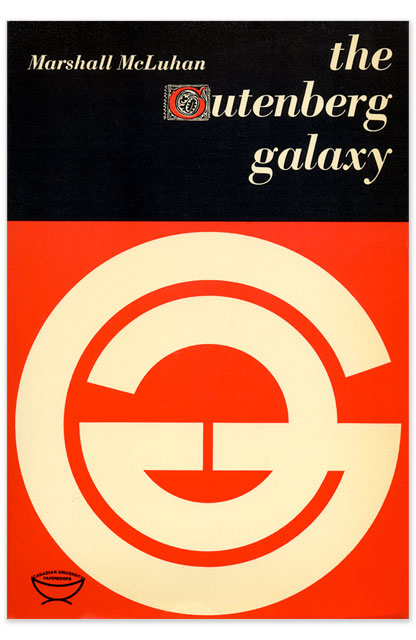
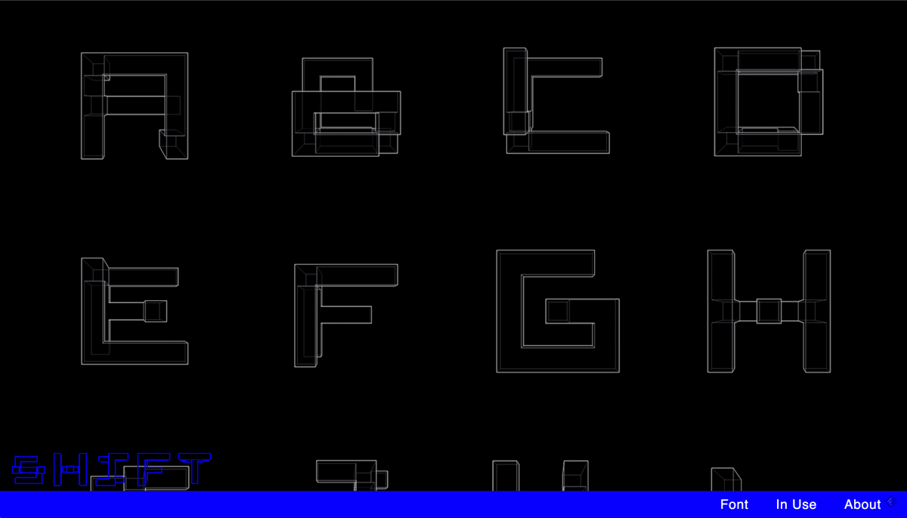
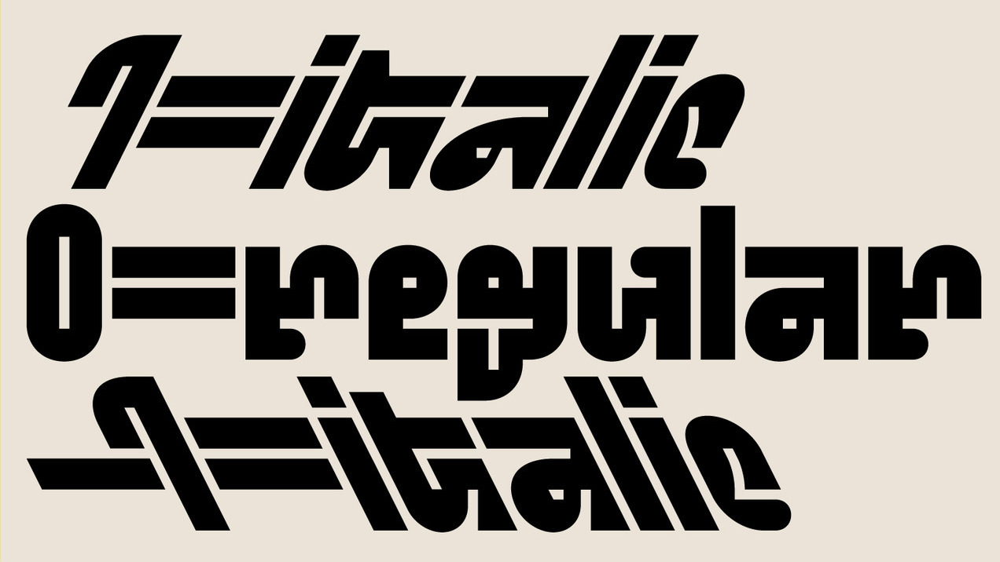
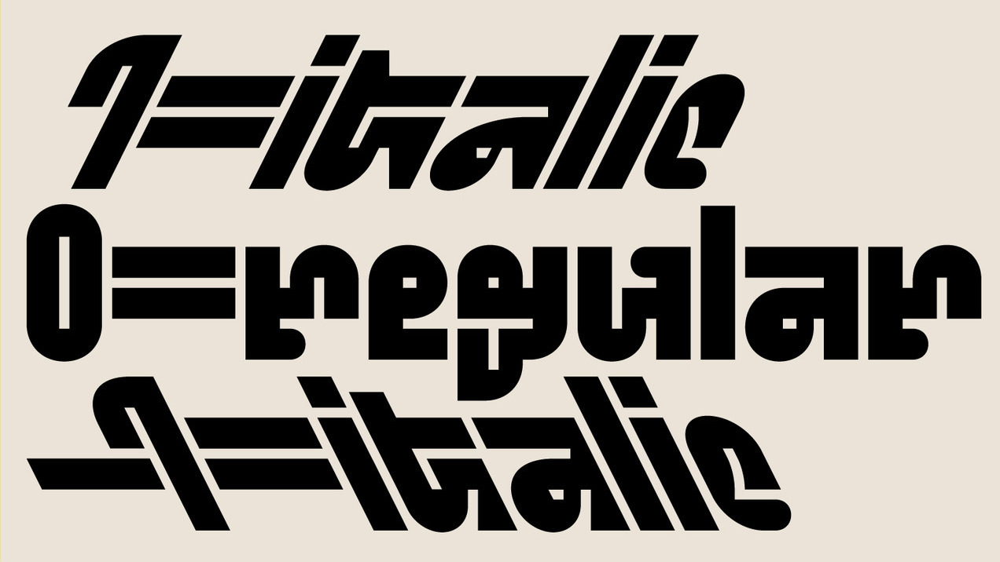
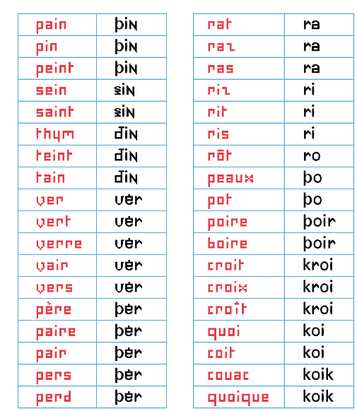
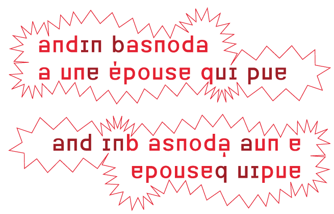
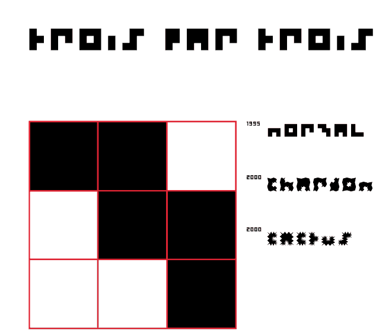
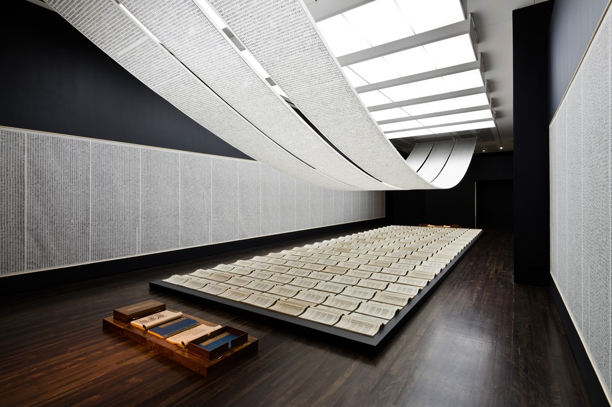

typography / type design
David Berlow on emojis: Berlow talks about how monolinear sans serifs are neutral in their ubiquity across textual communication. Emojis carry expression now. The contrast keeps getting revved up: original black and white emoticons evolving into full color mini-illustrations. Emojis are an interesting development in written communication…
“If a new type doesn’t show your own convictions, what is the point of doing all that work?”
— Gunnlaugur SE Briem

— Stone Drum Script by Wu Changshi, 1915
Wu Changshi was an epigrapher (a scholar of ancient scripts) who considered the seal script (as he replicated above) to be modern. The seal script was one of the earliest Chinese writing systems, and required lengthy study to understand and replicate. Traditional Chinese calligraphy showed the stroke of the brush and had varied stroke weight. The seal script is comparably monolinear, rectilinearly grid-based, and conceals the stroke of the brush tip, as seen in the rounded edges.
These characteristics run parallel to the transition from broad-nib/pointed nib writing to designed serifs then to sans serifs. The study of epigraphy is also similar to the practice and scholarship of reviving old type, wherein studying historical models seems to elevate the credibility of a typeface, just as the study of epigraphy was seen as an elite interest in China…
— Breaking Things Deliberately, Tobias Frere-Jones
A method of authorship is frontloading with your own experiments before projects even exist. That way you have your own repository to pull from, in turn taking it one step further from visual research only composed of other people’s work. Reminds me of when Keetra Dean Dixon came to WashU and spoke about her process. Both designers also show how self-direction prior to entering the commercial workplace is crucial to establishing individual voice, as well as how the past always informs the present.


— pg. 110, quoting Karl Gerstner, set in Gerstner Original
Idea Document: On the Shoulders of Giants: Notable problem is that this features mostly white European guys. But that goes for most type design books. Insightful nonetheless. Learned about Gernster’s font that intends to synthesize serif and sans, as well as André Ballinger’s Newut Tip, which is “an attempt to create a new universal typeface.“
“German texts always had a more ragged grayscale than the Latinate or Anglo-Saxon texts due to many capitalised words. When looking at the German immediately next to the other languages, it always draws slightly more attention visually.” (All nouns in German are capitalized.) Baldinger, (IDEA Document: On the Shoulders of Giants, pg. 104).
The dots stand in for accent marks. Since words are understood in context, the dots work.

— Bauer Beton

— Stephenson & Blake

— Berthold Standard
The Herb Lubalin Study Center is heaven except for the fact that your stay is limited to 2 hours instead of infinity.
It would be cool to make an online archive of type things, but when I reconsidered it, it’s more meaningful to make type that can be used. I’m also considering how type specimen have changed with online storefronts.

Modern Typography — Robin Kinross: Thoughts prompted by pages 10–11: Typographic scholarship is largely motivated by the intent to reproduce and sell typefaces modeled on old ones. Do type designers dig deeper than aesthetics?
What ideologies are we reintroducing, repackaging, reiterating… There’s fun facts, but what about context? Why was the original created in the first place? Does it matter since the connotations of a typeface change based on how they’re used? Do the ideologies of the original designer matter to the contemporary designer? Are contemporary process writings another form of marketing and persuasion?
But does scholarship need to be heightened to make typefaces successful in the market? Nope. And to some, selling is the priority… Can you blame them, considering the speed of society and the long-term process of type design? Are the stakes that high? What are the effects of type on culture, content reception, etc.?
It’s not only about legibility but also about communication and tone. Are the visual qualities of a typeface an argument on their own? An additional voice? Or a characteristic of the whole?
The tricky thing is, the use of a type is not controlled by its designer. Its context is variable. So is an ideology in a face even possible if its use is so varied? What does “authorship” mean in type design?
Modern Typography — Robin Kinross: Thoughts prompted by Chapter 2: Enlightenment Origins
“Modern typography exhibits a rational impulse, both internally in ordering its own working, and externally in the face it presents to the world.”
— pg. 16
“By a typographer, I do not mean a printer, as he is vulgarly accounted, any more than Dr Dee means a carpenter or mason to be an architect: but by a typographer, I mean such a one, who by his own judgement, from solid reasoning within himself, can either perform, or direct others to perform from the beginning to the end, all the handy-works and physical operations relating to typographie.” (Joseph Moxon, Mechanik exercises: or the doctrine of handy-works applied to the art of printing, quoted by Kinross pg. 15).
A typographer is as much as a practitioner as a reasoner, and these things can be taught. Typography is based in reason and rational thought, but it is not a science.
— romain du roi italic

Romain du roi introduced units for different body sizes and using the grid. It represents the move toward rationalization and order, and anticipates pixels and how fonts are constructed today (a fine grid of points).
A possibly incorrect assumption of mine: Italics are rooted in handwriting, so what happens when you try to apply that to a grid? An effect of rectilinear units and coordinates is that it leads to sloped romans instead of true italics, which precedes the oblique styles of sans serifs.
Chapter 3: The Nineteenth-Century Complex: Printing was full of working-class labor, roots of underserved, arduous workers:
“They quit, they cheated on their ‘voyage’; they collected small advances on the next week’s work (‘salé’) and then disappeared; and sometimes they spied for rival publishers or the police.” (p.27, Kinross quoting historian of book production in 18th century France). A reminder that things were way more intense back then.
Hard labor motivated workers to take shortcuts to make the work easier, not dissimilar to type designers today using programming and scripting to automate tedious and repetitive processes. Some say it allows more time to be allotted toward designing instead of pixel pushing.
Chapter 4: Reaction and Rebellion:
“The idea of freedom (‘as having skilled and unaffected boldness’) was essential to [Edward Johnston], as was that of constraint: ‘True spontaneity, however, seems to come from working by rule, but not being bound by it’…‘Set no limit to your hopes (which may contemplate Eternity) but every limit of the moment to your work’”
— pg. 39
Finished reading Modern Typography but it’s gonna need a second read eventually.
Chapter 6: New traditionalism:
Revivals were a thing because of consumer demand. What do people want now?
Rudolf von Larisch emphasized the importance of spacing over “the subordination of detail to the total effect” (p.76). I can get too finicky with type (as it’s easy to do) too early on. Just like graphic design, you need to start with the lower-fidelity, overall impression of a design before ironing out all the details. Otherwise it gets overwhelming and limiting. It’s also easy to fall into making showy glyphs that don’t quite work with the whole system.
A prevailing philosophy in type design: “writing or (more generally) hand-produced forms should be at the root of all letters for printing. To ignore written forms, as the ‘elemental’ or new typographers tried to do, was thus to discard the very foundations of civilized practice” (F.H. Ehmcke, pg. 77). What’s the relationship of the hand to how letters are made today? It’s at least half-digitally native now for typefaces, so… As long as it is identifiable as an alphabet, it is ‘legible’, as least legible in context. Individual letters may be hard to read, but you can tell when something is a letter, or when something looks like a letter. It’s so odd — letters are completely abstract things but are material representations of phonemes. Oof. Yeah it all started with the pen, but it doesn’t end that way. And it doesn’t have to start with the pen. What really defines an alphabet is the modular system. Repetition and permutation. Letters can be reduced to binary systems, like my CSS typefaces. It stops looking like an alphabet when none of the forms relate to each other. And form in stroke is not the only way to reference the roots of letterform. The alphabet is the alphabet, connecting points and lines. That’s what a stroke is now; not a gesture but a plotting of points.
Chapter 8: New typography:
Those who reject technological advancement are just denying the inevitable. Technology will make its way into everything and affect it; may as well attempt to steer the wheel.
El Lissitzky: “The printed surface transcends space and time. The printed surface, the infinity of books, must be transcended. The electro-library.” (pg.87, originally from “Topografphie der Typographie”). Still not sure what the electro-library is, but maybe it alludes to how text is read has changed. I am also keen on the idea of how type, the material, allows ideas to exist, to be transferred, to be heard, and to persist after its author has passed.
Jan Tschichold: “An extraordinary economy could be achieved through the exclusive use of small letters — the elimination of all capital letters… our script loses nothing through writing in small letters only — but becomes, rather, more legible, easier to learn, essentially more economical. for one sound, for example ‘a’, why two signs: A and a? one sound, one sign. why two alfabets for one word, why double the quantity of signs when half achieves the same?” (pg.88, originally from Elemental Typography). Another reason why the universal alphabet was attempted. Not sure how I feel about the simplification of alphabets either, but Tschichold has a point. I think it all just falls back on applying such an idea to an appropriate context.
Herbert Bayer: “to print a hand-produced letterform with a machine is false romanticism” (p.93, originally from his presentation Versuch einer neuen Schrift). Maybe this is why script typefaces kind of generally irk me.
Chapter 9: Emigration of the modern
H.N. Werkman was a typographer who did “experiments of configuration and of technique, in alliance with subversive content, suggested ‘an aesthetics of resistance’ [(pg.103)] … was shot by German military authorities who, it has been suggested, were provoked by his unorthodox typography” (pg.104). This was during Nazism. Again, stakes were high back then. Jeez.
Tschichold’s criticism of Germany’s new typography: “It seems to me no accident that this typography was practised almost exclusively in Germany and hardly found acceptance in other countries. In particular, its intolerant attitude corresponds to the German inclination to the absolute, its military will to order and claim to sole domination correspond to those terrible components of the German character that unleashed the rule of Hitler and the Second World War.” (said right after the war). “…aesthetic fetish out of efficiency and machine-production … For the worker, machine production has thus meant a heavy, almost deadly loss in the value of experience, and it is entirely wrong to put it on a pedestal… since we are unable to manage without machine production, we must accept its products simply as facts, without worshipping them on account of their origins” (p.108, originally from ‘Glaube und Wirklichkeit’, p.235). Considering the politics of aesthetics and the implications of imitating the form of an era while ignoring its social/political/etc. context.
10,000 Original Copies: Kris Sowersby argues that every interpretation of a preceding typeface is an iteration upon an idea that moves it forward and situates it in today’s world. Type design is a gradual improvement, moving at the pace of culture and the market. Originality is a false goal. New technologies expand the possible uses of a typeface, but the forms themselves are simply shapes. How is authorship present in type design? What makes a typeface more than a forgery? How is it different from Mona Lisa duplicates?
Typefaces aren’t merely facsimiles: well-done ones reflect the designer’s ideologies, their knowledge of history, and their craftsmanship.

The Gutenberg Galaxy: The Making of Typographic Man — Marshall McCluhan
“By the same process whereby he spins language out of his own being, he ensnares himself in it; and each language draws a magic circle round the people to which it belongs, a circle from which there is no escape save by stepping out of it into another.”
— Wilhelm von Humboldt
Learning different languages—linguistic, visual, etc.—enables comparison to one’s defaults (more perspective).
“By the meaningless sign linked to the meaningless sound we have built the shape and meaning of Western man.”
— Marshall McCluhan
The alphabet is completely abstract, yet it’s the reason why anything is possible at all.

— MEEK Typographic Synthesizer
PEOPLE music gathering and website: “Music is for everyone.” A non-hierarchical, non-commercial digital space for artists (mostly musicians) to upload and update unfinished work. Includes some background information on when and where the pieces started.
Note the language: people instead of solo artists, projects instead of bands—reflects the in-progress work (or past sketches) but also the ideology of PEOPLE.
Also note the typography: monospace and all caps of PEOPLE representing equality.
The gathering itself is unscheduled and spontaneous “performances” consist of in-progress work developed during the gathering.
More insight in TCI interviews:
“You look at our capitalist society and people who are so enthralled with themselves and their own stories because they’re afraid to die. They’re afraid to stop expanding … You don’t need to expand, you don’t need to become Walmart.”
— Bon Iver

— Nordvest by Nina Stössinger, a text typeface with heavier horizontals
Constrasting with Convention — Nina Stössinger: Isolating verticals and horizontals. Difference between convention and truth. One of the first moments of Nordvest’s basis also came from Nina “misusing” a pointed pen.
Is a result from “incorrectly” using a tool invalid if it does not follow convention or the tool’s original intent?
— Tool controlling designer vs. designer controlling tool

I was creating a flyer for a student group and one of the group members thought the serif I used was Times New Roman. When I said it wasn’t, she immediately retracted her dissatisfaction. What does that mean?
She loved the all caps, tracked out, bold geometric sans though.

— NON Dit-Dah font
Formist is releasing limited edition fonts in a series called NON. The types are intended to “form a new universal language,” which kind of doesn’t make sense if the font is limited to 10 copies… and because the letters are also not legible. In any case, a universal language is not achievable. Right now. Well actually it’s not immediately legible but you could learn how to read it… It’s not dissimilar to cuneiform or hangul. It’s alt-English.
Dit-Dah is based on the forms of morse code, and its dot/line modules were used to construct approximations of letterforms. “This system simultaneously acknowledges both the written letterform and transmitted code form, and in turn, forms a third abstracted universal language.”
Not sure how I feel about the idea of a limited edition font. It’s kind of breaking my brain to think about it and the physics of digital “material.”

— image idea, set in History
The forms are based on Roman proportions. Captures atom ≠ pixel, translation from physical form to digital format.
Phrase is a rehash of The National’s album title The System Only Dreams in Darkness. The internet is a bunch of rectangles.

— prototype site
I made another CSS typeface, though there’s not really much attention paid to interaction (though that’s not really the point of this). I want to figure out how this thing can actually be typed in its animated form. I don’t think it’s possible with current font technology; it’d be more of a browser hack. Right now it’s just key presses changing opacity.

— RWONG (SHIFT) typeface by June Shin
Each glyph is a hybrid of two characters.
 

— Standard and Pickle-Standard by the whacko-type designer Benoit Bodhuin
It’s grid based and great.
The e in Eames Century Modern by Erik van Blokland: no definitive right and wrong, just convention and context.
Interpretations of old form made contemporary
These are examples of contemporary type that resonated with me before I knew why they did:

— Pitch by Klim
Back when I was taught the value of typefaces and type design, I was introduced to Klim. Pitch made me a bit more aware of what type could be, how it could really make someone react. Why does it look so good to me? It’s hit me for 3 reasons, each one articulated at different times the more I have looked at:
1: It’s beautiful. Crisp without feeling cold.
2: Pitch has a very specific feel, a synthesis of digital and analogue that recalls but does not imitate typewritten text.
3: The one move of geometric bracketed serifs defines Pitch’s entire character (which is why that move also appears where strokes join in the sans version). Instead of trying to imitate ink spread, Sowersby fills those missing pieces with pure shape.
This is a great example of contemporary type informed by historical precedent that doesn’t look dated or completely derivative. Sowersby also wrote an insight that proves that he’s aware of the contemporary digital environment in his essay “10000 Original Copies”:
“I was trying to capture an impossible aesthetic, that I was trying to mimic a technology that isn’t used. So I decided to make it as ‘digital’ as possible, to be ‘true’ to the spirit of the thing. I made the points infinitely sharp, I detailed it to be contemporary and rigourous. I want it to be a product of our time and our digital culture.”
— (talking about when he was digitizing Fell Types, not specifically Pitch)
In the beginning of the article he also makes explicit:
“letters [are] now divorced from lead and married to light”
Abstraction of physical type’s byproducts or the complete removal of those material artifacts is key to making contemporary web type not look imitative. Type needs to be self-aware of its environment.

— Dala Prisma by Commercial Type
— Prisma, image from here

Dala Prisma was made possible with scripting (and patience). It would have taken a lot longer to draw this face without the help of programming. Again, this is beautiful. It was inspired by the striped type Prisma which was more manageable to draw because of the monolinear, geometric strokes. Dala Prisma applies stripes to a Victorian shape, creating the great beach ball effect and the “infinitely sharp”, tapering stripes.
Pitch and Dala Prisma possess no material noise. They’re crisp. Even though their forms are all inspired by material historical precedent made with different technology, there’s no erosion or ink splatter. Because now it’s all light behind a frictionless glass screen. Type norms of serifs and ball terminals persist, though abstracted. Is that what makes a good type? Accessible in its contemporaneity, not abstracted to uselessness or unfamiliarity or dully derivative of history?
— monkeytype.xyz

Oh-ooh-ah-ah-ahh-ahhh: Monkey Type is an anonymous foundry “based on the internet”. The concept of their not-serious foundry is a response to the high-brow, pedantic type world. But they’re fully aware of their own ridiculousness in making type and working on an s for three years.
But they just made another grotesk font. The framing of a practice and a foundry maybe means just as much as the work. Oof.

— Helvetica Ornament by Anther Kiley
Synthesizing yet juxtaposing.
In bookbinding my professor mostly only ever references either Ken Botnick or Tauba Auerbach.
Warranted.
Auerbach makes a lot of books and she also has a series of fonts that begin with the same rectilinear proportions. Each one then forms from a matrix.

— Square Cloud
Looking at all her type specimen, patterns in letterform structure crop up, such as the Christian-cross T’s. To Auerbach, these types are personal, a “visualization” of her voice. They are not commercial/retail typefaces. Despite their logical matrices, they don’t come off strictly mechanical but rather idiosyncratically programmatic. They are also related to the whole body of her work in how physical and digital forms influence each other and how false dimension is created.

— Five Strand Woven
The Five Strand Woven for example ties into the series of woven canvases. This font references a handicraft that isn’t calligraphy or pen-based.
Pierre di Sciullo made all these experimental fonts:

Sintétik: “ruthlessly compresses language” by making homophonous syllables be spelled the same way. This reduction in redundancy reminds me of how Jan Tschichold pushed for unicase type designs since A and a make the same sound (but he fails to acknowledge that they can serve different purposes).

Quantange: an attempt at visualizing sound with form (tying phonetics closer to visuals) in the French language.

Basnoda: “for the setting of a vertical, palindromic sentence by Georges Perec. It reads, upright, from left to right, then from left to right - though in this latter case upside down.”

3 par 3 (3 by 3): “A character designed on a grid of three squares by three = 9 squares. This is not many. I have attempted the same on a grid of 1 square by 1. The result had great rigour, but was a little monotonous.” (ha)

Zebra: an i with 4 tittles! What would a seriffed serif look like?

— Book from the Sky by Xu Bing
I learned about this installation by Xu Bing this week, and it’s insane. He made up 4000 fake Chinese characters and hand carved all of them and hand printed all of them. Calligraphy is the oldest art form of China, and studiers of it could not believe that none of the characters that Xu made up were real. Some visitors would come back to the installation and spend days there to try to find a real character even though they were told that all of them were made up. Some were able to identify ancient ones, but their translated meaning doesn’t mean anything to the piece since the replication of characters occurred out of coincidence and because those characters don’t have any meaning now. People were incredibly frustrated that they couldn’t find anything they understood despite everything looking so familiar. Some of the characters were close to real ones, but a missing stroke for example makes it not the same.
Type design for Chinese characters is incredibly time consuming since there is not just 26 letters but over 3000 characters, so its even crazier that Xu was able to invent 4000 of them and carve all of them. This contrasts to how reduced the Latin alphabet is. Of all the possible permutations of strokes and glyphs, only a relatively small set is actual language.
— a shot of one of the codexes

The assignment of meaning to shape is fairly arbitrary and has evolved to become more and more abstract and detached from physical origins. Sans serifs didn’t crop up in printing until the 19th century. New form is slowly adopted and popularized, because accessible type (readable, legible) is important for the dissemination of ideas. When typeform is made for an abstract concept, it becomes a less broadly applicable typeface, and therefore a less useful one. It becomes more about the idea of the typeface and less so the words that it may be applied to…
— the alphabet


– “art for the people”
Xu Bing created a writing system called “square word calligraphy” that formally looks Chinese but is actually legible (for the most part) to English readers. The more legible calligraphy pieces in this system are the ones that contain familiar content, so the context of the words helps those familiar with the texts read it. The bigger pieces are still read vertically, column by column.
“Letters are sheer form and writing is rhythm”
— Gerrit Noordzij, The stroke of the pen, via Fred Smeijer’s Type now
It’s not so much the letter as much as it is the word. And it’s not so much the word as it is written language. Materializing ideas in a shareable way is the point.
— Lynö by Radim Peško & Karl Nawrot
From Peško’s site: “They are open and various, and their spirit is this: to resist normative tendencies and to reject the idea of definitive form.”
The thing is, all legible letters are normative and definitive in the skeletal sense. Letters are shapes, but not strictly defined ones… it’s hard to write the definition of an A, because it also depends on the context of the other letters in the typeface. When you see or read an A, it is an A. Letters are not like circles and squares which are mathematically definable.
Lynö is able to work because it is still based on the alphabet. As whacky as it may look, it’s really not that crazy because it’s all still readable. That’s what makes it usable and worth making. The ability to call Lynö a type family is also based on proportion and stroke weight. An consistent color is present.
Still some questionable things: why were some of the letters in the font Jean not mutated? Anyway, Jean is the one I see used most often from Lynö. It gives a weird inky materiality to the letters.
Caligraft is a project by Ricard Marxer Piñón about “crafting computational calligraphies”.
Not about imitating or simulating calligraphy, but reconsidering what motion can mean in the digital context, with influence by generative art.
The website is also pretty outdated and slow, not even loading anymore. How can websites be archived yet remain interactive?
— ZXX typeface by Slavoj Žižek
Making Democracy Legible: A Defiant Typeface: “We feel free because we lack the language to articulate our unfreedom” (Žižek).
In talking about digitally native typefaces, Ben mentioned that someone made a typeface that is only human-readable by rendering OCR (Optical Character Recognition) machine unreadable.
Another note: artificial intelligence can’t determine beauty or experience the sublime without being programmed to do so (and even then…).
— Letter & Spirit by Dexter Sinister
The font Meta-the-Difference-Between-the-Two-Font-4-D intends to bridge historical precedents with parametric design. Sinister asks “How to keep things moving? … what if we make one of those parameters time itself?”
I had the quote “I follow the spirit of the law not the letter” saved before watching this video but did not know that it comes from judicial practices and precedents. I was considering trying to define letters in terms of language in order to abstract letters using letters… but after trying to think about how to define each letter, it was basically impossible since the image, perception, and understanding of a letter also depends on its context. An E can be described as 3 horizontal lines parallel to each other and connected by a vertical line. But without the vertical line, the E could still be read as an E. Additionally, the definition doesn’t describe how far apart the 3 horizontal lines are. Letters are weird! Though they are pure shape, they can’t be mathematically defined like a circle or square. It’s quite simple: an E is an E if it looks and reads like an E. Though letters are visual, they are at the core immaterial and completely abstract.
I have also been reading about Ludwig Wittgenstein, a philosopher who focused on language’s limits and function. A frequently cited quote of his is “What we cannot speak about we must pass over in silence.” Since letters are the basic unit to written language, it’s quite difficult to break them down any farther. They are not merely line compositions. So I have just come to accept a letter for a letter and to keep moving on. It is what it is. What I have come to observe is the changing meaning of “movable type.” For Latin characters, it began with Gutenberg, moved into wood type, hot-metal typesetting, phototypesetting, typewriters, (what else?), and now digital typesetting. Movable type now can involve fluid time and movement, live transformations. Can type ever become unstuck from rectangles?
After hearing about Metafont again, I decided to actually look into what it is and what it makes. It doesn’t aesthetically work too well but it’s undeniably impressive: “The Concept of a Meta-Font” by Donald Knuth. I though about making a parametric typeface, which I kind of did for the CSS typeface project, but after seeing Metafont and Spectral, I’m not actually into it that much, weirdly. It’s not really type design, and too many broad parameters means the typeface loses its identity.